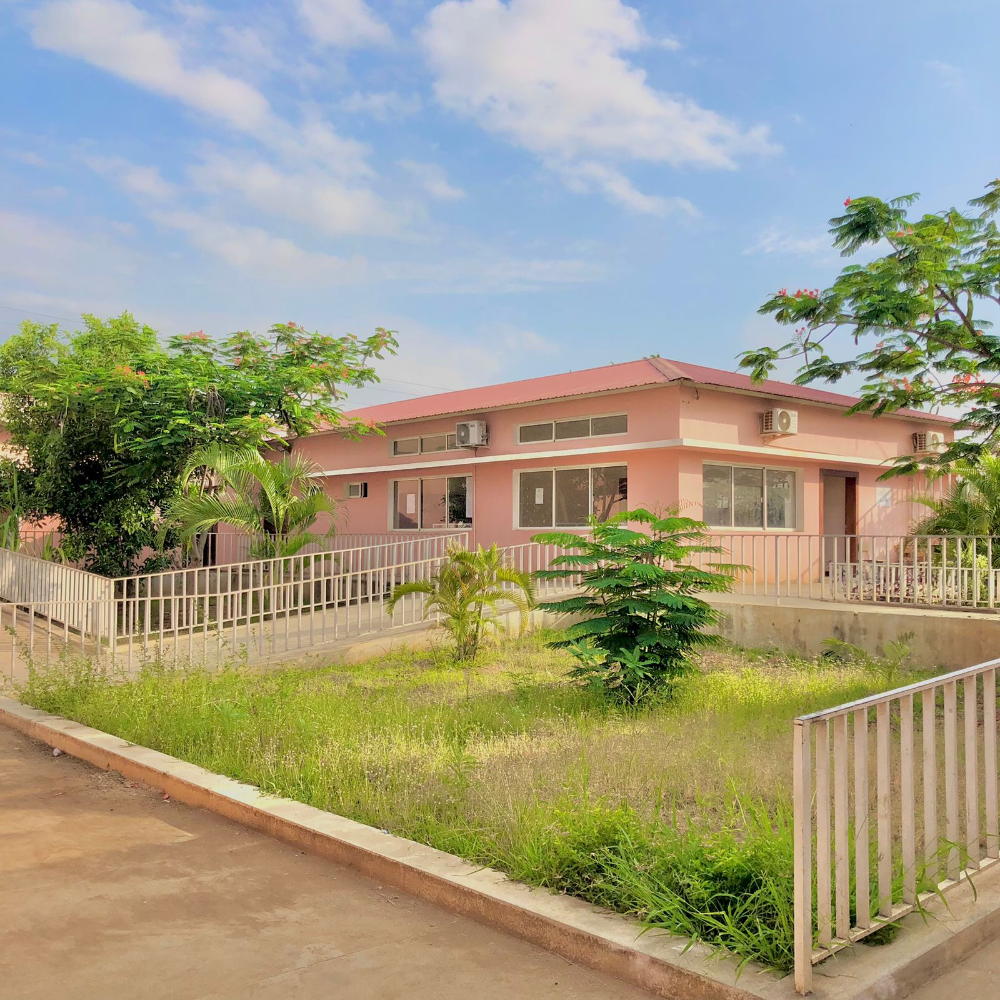
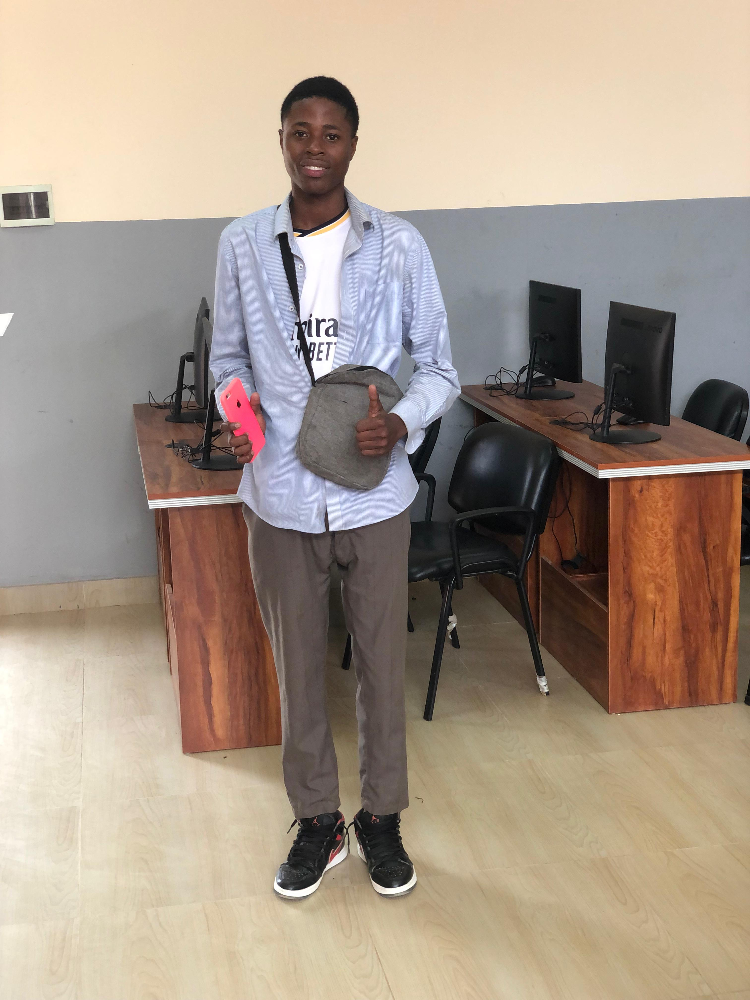
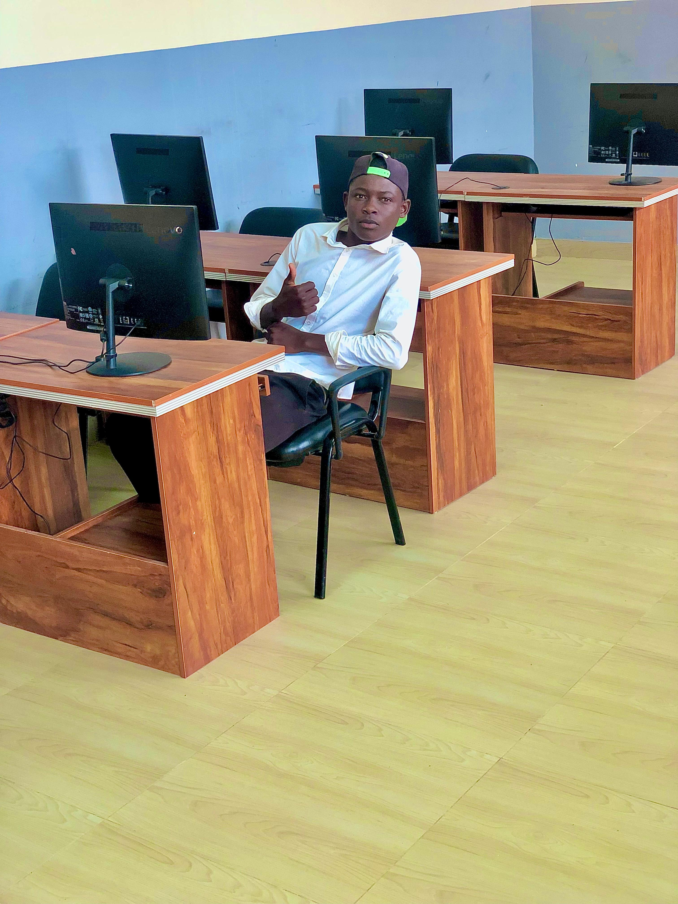
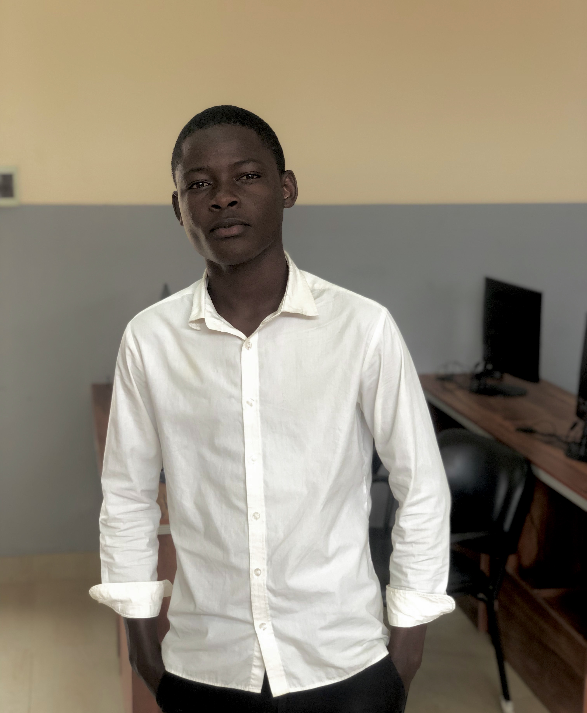
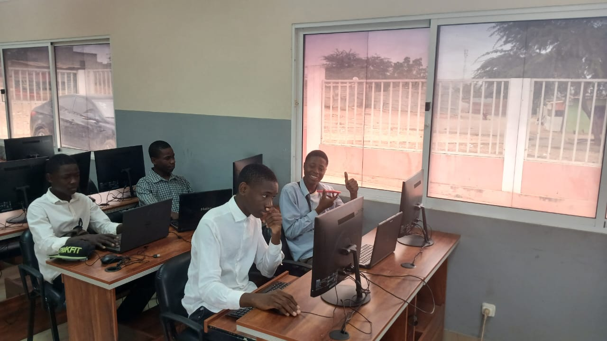
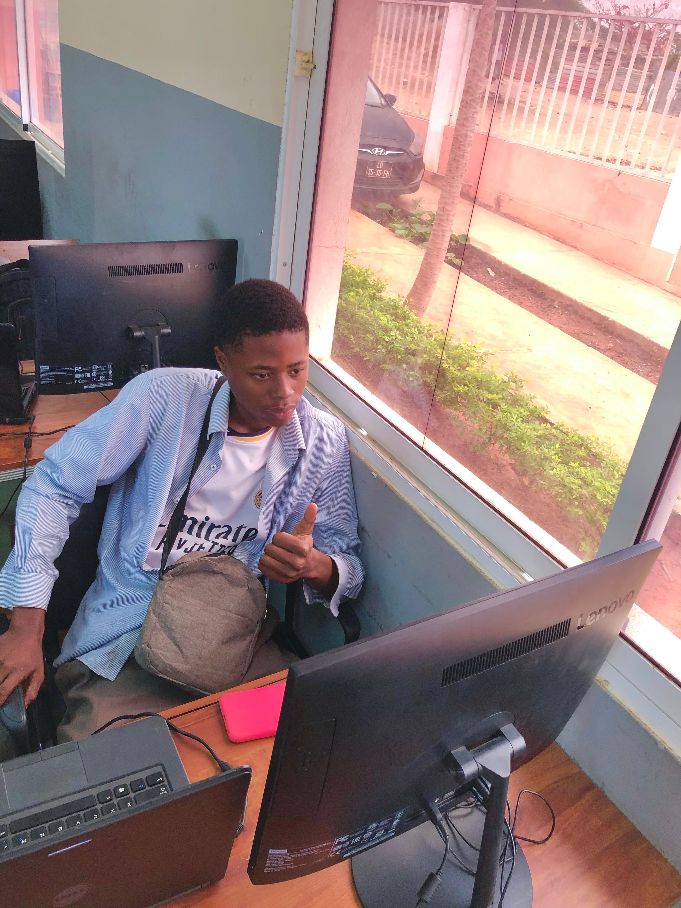
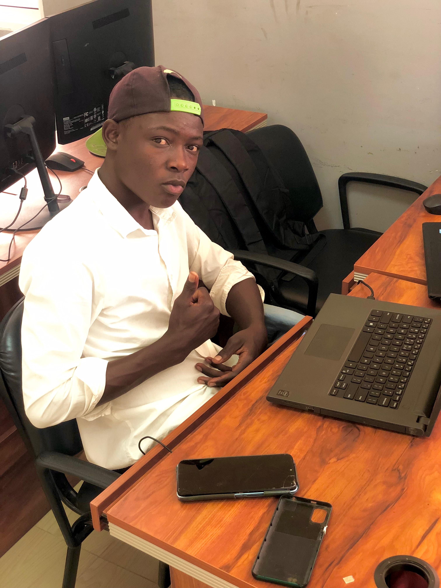
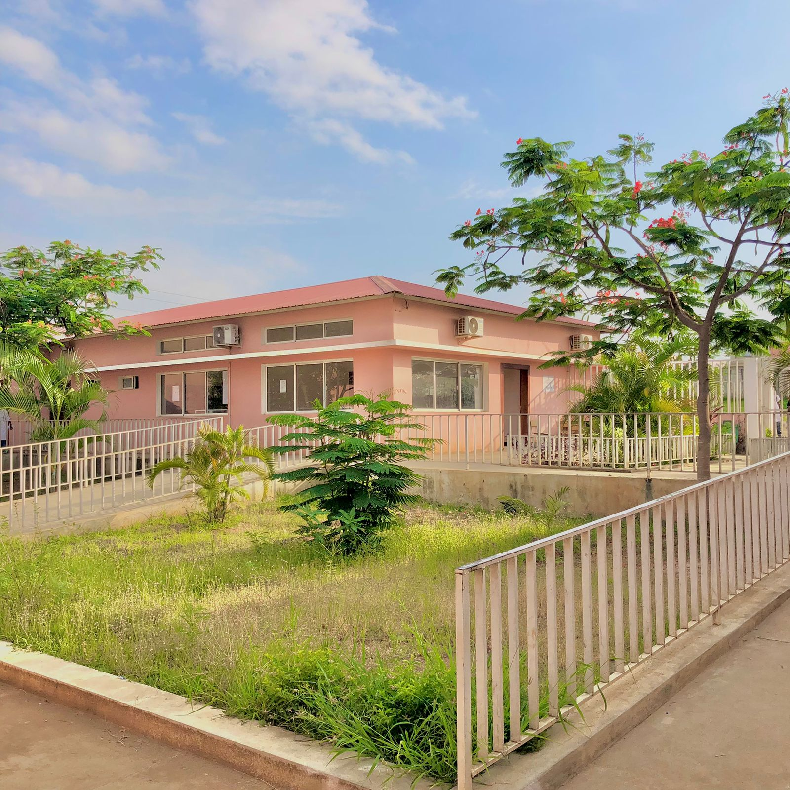
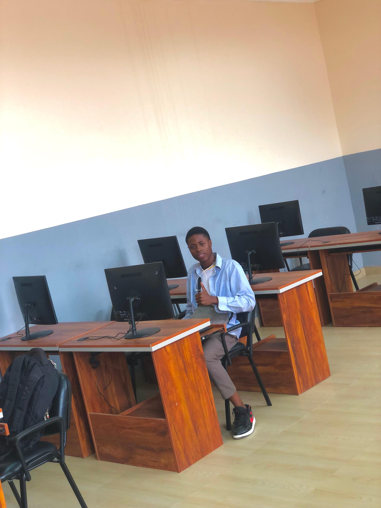
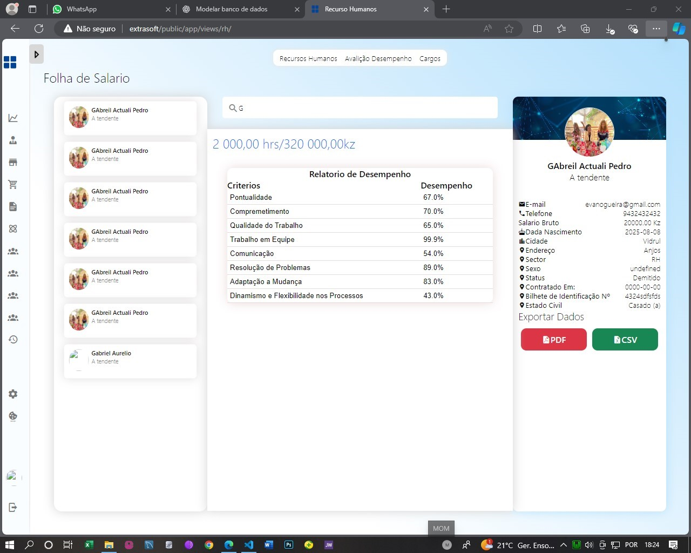

Excelência em Educação Técnica e Profissional
O Instituto Politécnico do Maiombe (IPM) é uma instituição de Ensino Médio Técnico Profissional comprometida com a formação de técnicos e profissionais altamente qualificados para atender às demandas do mercado de trabalho angolano,incentivando e melhorando a sua aproximação com o mundo de trabalho, dotando eles de conhecimentos e valores.
Fundado em 2010, o IPM já formou mais de 5.000 profissionais em diversas áreas técnicas, contribuindo para o desenvolvimento econômico e social do país.


O curso de Informática oferece formação completa em hardware, software, redes e programação. O estudante aprende desde a montagem e manutenção de computadores até ao desenvolvimento de sistemas e websites modernos.
Saídas: Programador, Analista de Sistemas, Técnico de Redes, Suporte Técnico, Administrador de TI.

Forma profissionais capazes de gerir e controlar finanças empresariais. O estudante aprende sobre balanços, auditoria, fiscalidade e tomada de decisão com base em dados contábeis.
Saídas: Contabilista, Auditor, Analista Financeiro, Consultor de Gestão.
Capacita os estudantes em liderança, recursos humanos, marketing e estratégias empresariais. Desenvolve competências para criar, gerir e expandir negócios competitivos.
Saídas: Gestor de Empresas, Administrador, Consultor de Negócios, Empreendedor.
Une tecnologia e administração, formando profissionais capazes de usar sistemas informáticos para apoiar a gestão empresarial. O aluno aprende a gerir dados, desenvolver relatórios e integrar TI na tomada de decisão.
Saídas: Gestor de Sistemas, Analista de Negócios, Consultor em TI, Administrador de Dados.
Os cursos técnicos permitem ao estudante começar a trabalhar mais cedo e com grande procura no mercado.
Aulas com foco em prática e experiência real.
Cursos técnicos têm investimento menor comparado ao ensino superior.
Um curso técnico também é uma porta de entrada para a universidade.
✔ Professores qualificados e experientes
✔ Salas modernas e bem equipadas
✔ Laboratórios de informática de última geração
✔ Estágios garantidos em empresas parceiras
✔ Rede de ex-alunos bem-sucedidos
✔ Actvidades esportivas e culturais variadas
✔ Ambiente Acolhedor e incluvo para alunos e familiares
✔ Parcerias e Eventos que aproximam a escola da comunidade
✔ Incentivo ao empreendedorismo , inovaç]ao e uso da tecnologia
✔ Desenvolvimento de competências que serão úteis no mercado de trabalho
✔ Metodologias modernas que estimulam o pensamento crítico e a criatividade
✔ Desenvolvimento pessoal, incentivo a leitura, esportes e ciências
✔ Projectos extracurriculares que desenvolvem talentos e habilidades
✔ O Aluno adopta grandes habilidades de se comunicar fluentemente
✔ Preparação para exames nacionais e ingressos a Universidades
Profissionais de sucesso no mercado nacional e internacional.
Ambientes equipados para melhor aprendizagem.
Docentes com experiência e dedicação.
Tecnologia de ponta ao serviço dos alunos.